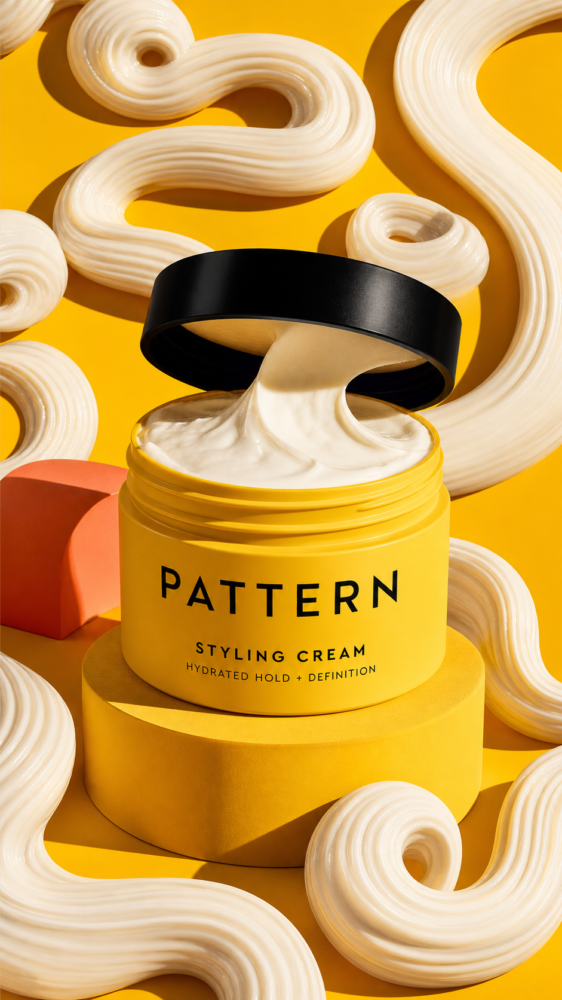

Concept created by LoomixUnsolicited concept
PATTERN BeautyReels + TikTok9:168 seconds
Styling Cream — Make the Pattern
The product name becomes the visual mechanic: thick buttercream leaves the jar and draws a sequence of S-curves, coils, and soft twists until the entire frame becomes a tactile curl pattern.
Create the full adOpen product pageAI-generated visual direction

Concept art for discussion only. Product and brand belong to PATTERN Beauty.
Hooks
Cream becomes the pattern.S-curve. Coil. Twist. Repeat.Touchable hold, drawn in motion.
Six-shot storyboard
- Open on the thick cream surface.
- Lift one buttercream ribbon from the jar.
- Draw a wide S-curve across yellow.
- Tighten into a coil, then a soft twist.
- Repeat until the frame becomes a pattern.
- End on the yellow jar and CTA.
Caption
A product-texture demo that literally writes PATTERN into the frame.
LoomixLoomix turns one product photo into a storyboard, short video, captions, and ready-to-post ad copy.